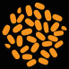

With thanks to Stu Nicholls - cssplay.co.uk.
Our very own Kerry Natural Spring Water is perfect for Brewing. Local word has it that this water has many, life affirming powers. All we know is that having water of this quality on our doorstep helps us produce a unique Larger that is as close to nature, and is unmistakably Irish.
Finest quality Hops are added to our larger & Cara Malt, which is mashed with hot spring wate and left ow stand while the starches convert to sugar. The hot sweet unfermented beer is run off to the Kettle and the sugars are rinsed off. Our Hops are added and given a vigorous boil. Chilled Spring Water cools the Crean's Wort en route to the Fermenting Vessel. Yeast is added so Fermentation can take place. The Beer is given a 2 day stand then chilled and transferred to the Largering Vessel.
We use only the finest natural ingredients and the simplest of brewing techniques to make our larger as pure as possible. We introduce the ingredients to each other and patiently wait over a couple of weeks while nature does the rest.

Crean's is Brewed with two Malts. Larger Malt, our base Malt, light in colour with a slight sweet malty taste and Cara Malt, roasted longer than the Larger Malt. This gives the Crean's the golden colour and slight caramelised taste. Then there is our Sflager Yeast, a German style lager yeast, all coming together to produce what can be described as....
FRESH, CLEAN, REFRESHINGLY GOLDEN LARGER.